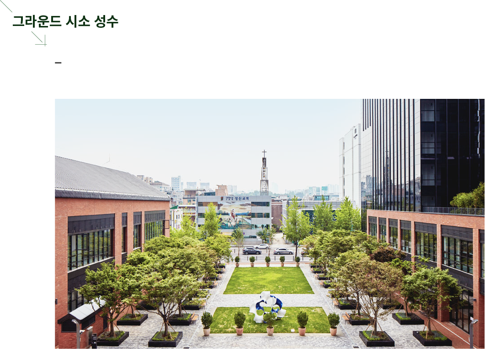
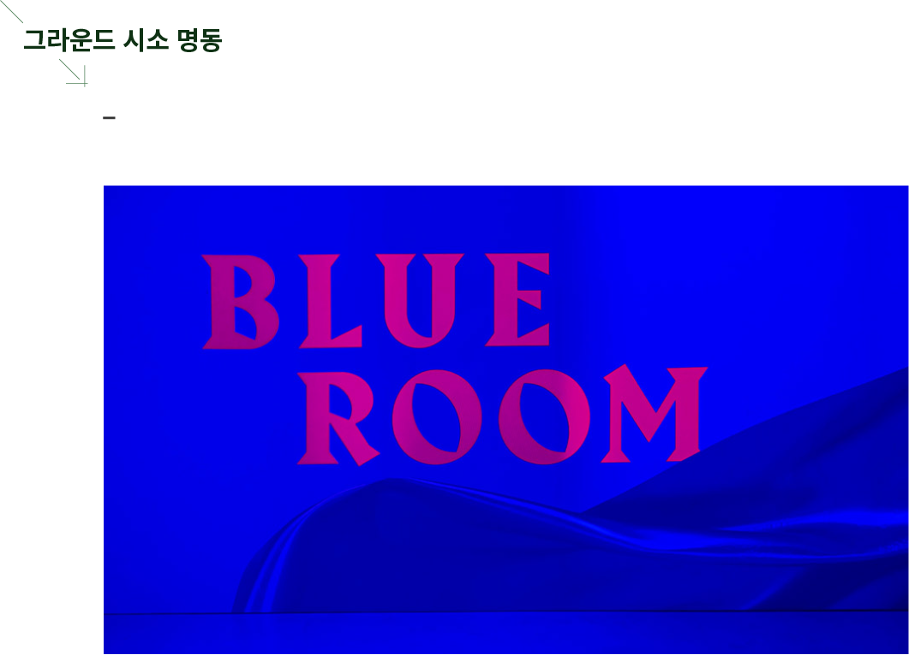
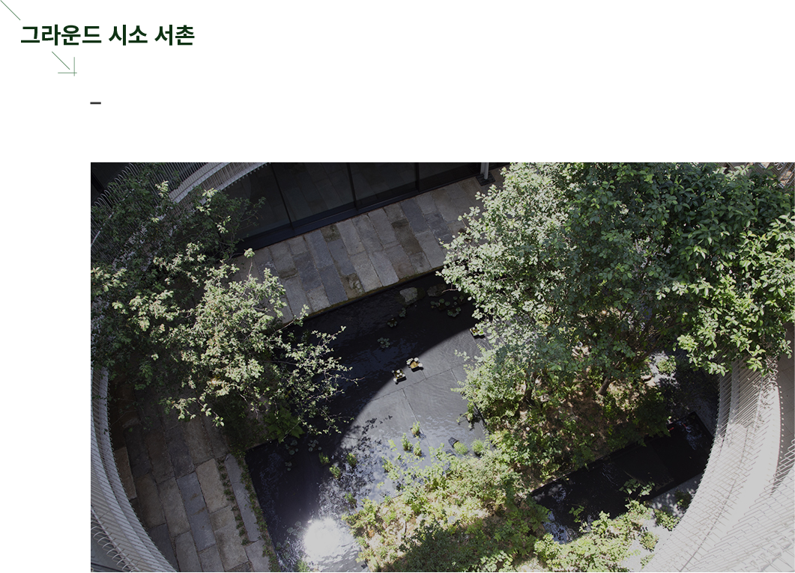

성수 상권 최초 대규모 클러스터형 상업시설 '성수낙낙'에 위치한 그라운드시소 성수는 다양한 식음료 브랜드와 이웃
하며 성수동을 대표하는 명소로 자리매김하고 있습니다.
하며 성수동을 대표하는 명소로 자리매김하고 있습니다.

역사, 예술, 문화가 만나는 종로 서촌의 대표 복합문화공간 그라운드시소 서촌은 건축사 사무소 'SoA(Society of
Architecture)와 조경 스튜디오 'Loci Studio'가 설계했습니다.

롯데백화점 본점 에비뉴엘 9층은 최고 높이 6m의 벽면 스크린으로 재탄생됩니다. 5면 영상 상영을 위해 설계된 멀티
플렉스급 영상과 음향 시스템은 혁신적인 몰입감을 제공합니다.
플렉스급 영상과 음향 시스템은 혁신적인 몰입감을 제공합니다.
